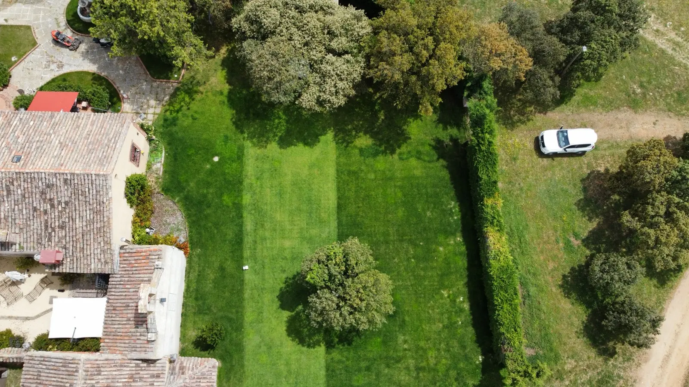
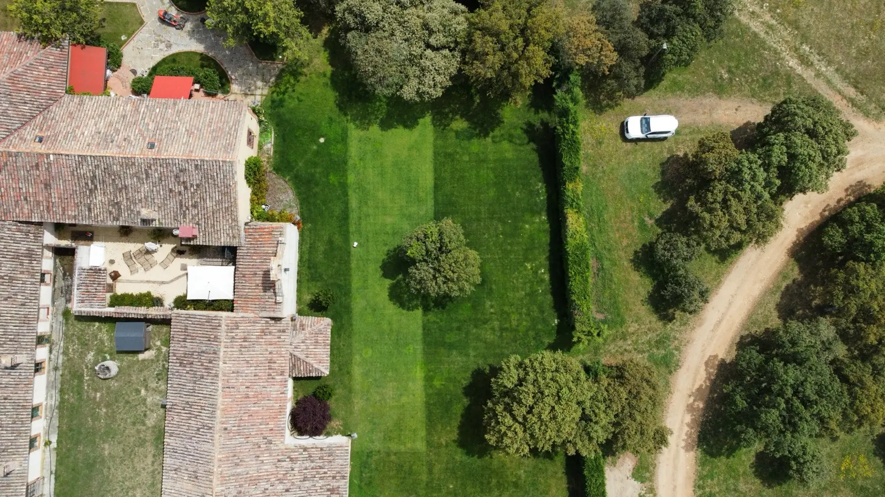
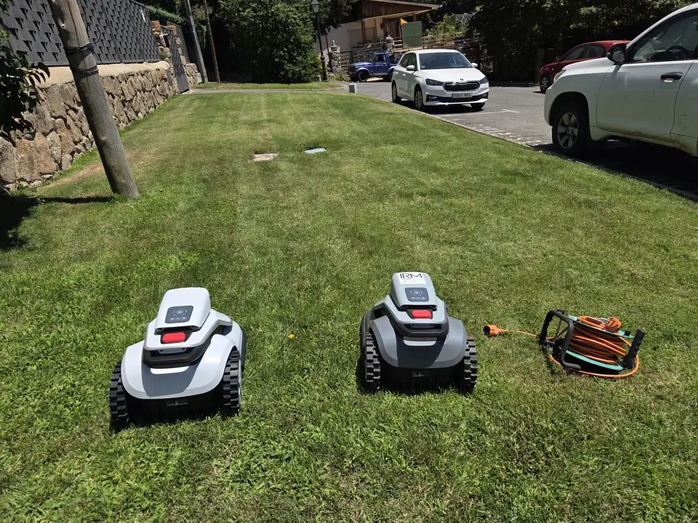

Una línea de presupuesto
Un importe anual cerrado que presentas a la junta una vez y no vuelve a moverse: sin visitas extra, sin recambios, sin sorpresas.
Corte diario automático, altura uniforme en todo el campo y un coste anual cerrado con mantenimiento y averías incluidos.

El mantenimiento del césped de un campo de fútbol en Madrid se lleva muchas horas de jardinero y mucha gasolina. Con el robot, un cortacésped automático de batería, el corte es diario: sale cada día, corta un poco y vuelve a su base, y el césped se queda a la misma altura en todo el campo. Lo programamos entre entrenamientos y partidos, así que nunca está en el campo cuando están los jugadores. Sin ruido, sin humo y sin que nadie tenga que acordarse de cortar.

Si eres quien lleva el presupuesto del club, el renting de robot cortacésped te quita dos problemas: el gasto variable del césped y tener que explicar cada factura. Es un único pago al año, por transferencia, que incluye robot, instalación, mantenimiento y averías. El robot cortacésped para grandes superficies como un campo se dimensiona en la demostración.
Un importe anual cerrado que presentas a la junta una vez y no vuelve a moverse: sin visitas extra, sin recambios, sin sorpresas.
Robot, instalación sin cable perimetral ni obras en el campo, app configurada, mantenimiento de todo el año y averías. Un interlocutor: Pepo, que instala el robot cortacésped profesional y lo mantiene.
El robot es de IRM: el club no inmoviliza dinero en una máquina ni la amortiza ni la guarda. Paga el servicio y punto.
Un campo de fútbol tiene unos 7.000 m², muy por encima de los tramos de jardín (a partir de 660 €/año* hasta 600 m² y 760 €/año hasta 1.000 m²). Cuántos robots hacen falta para el campo y el precio anual: [CONFIRMAR PEPO número de robots y precio; presupuesto a medida tras la demostración]. *IVA [CONFIRMAR PEPO].
Es el argumento que protege a quien firma. Si el robot se para a mitad de liga, llamas a Pepo y en menos de 7 días está arreglado o hay otro cortando. La sustitución del robot cortacésped, el mantenimiento y las averías van dentro de la cuota: nadie en el club tiene que explicar un gasto que no estaba previsto.
No somos nuevos en esto: ya hay campos de fútbol donde el césped lo corta un robot de IRM todos los días [CONFIRMAR PEPO municipio]. Un caso real, con permiso del club, para que veas cómo funciona en un campo como el tuyo.

"Para nosotros era una partida más del presupuesto y una preocupación menos para la junta: un pago al año y, si pasa algo, lo cambian. El campo está igual el martes de entrenamiento que el domingo de partido, y el jardinero que teníamos ahora se dedica a lo demás."
[PLACEHOLDER · sustituir por la cita real · CONFIRMAR PEPO permiso del club]